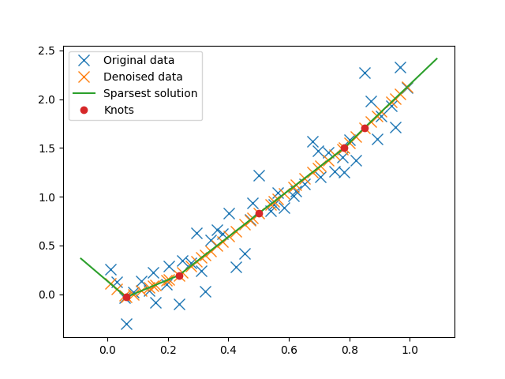

Regress Module#
We use the regress module to perform linear regression on a set of 1D points.
Imports#
import numpy as np
from matplotlib import pyplot as plt
from splineops.regress.denoising import denoise_y
from splineops.regress.sparsification import sparsest_interpolant, linear_spline
Data Preparation#
Create a dataset as (x,y) coordinates.
# Directly embedded data
data = np.array([
[0.0107766212868331, 0.260227935166001],
[0.0310564395737153, 0.124128829346261],
[0.0568406178471921, -0.0319625924377939],
[0.0624834663023982, -0.305487158118621],
[0.0855836735802228, 0.0198584921896104],
[0.111715185429166, 0.132374842819488],
[0.139391914966393, 0.0346881909310438],
[0.151220604385114, 0.225044726396834],
[0.160372945787459, -0.0839333693634482],
[0.196012653453612, 0.100524891786437],
[0.20465948547682, 0.286553206119747],
[0.236142103912376, -0.0969023194982265],
[0.247757212881283, 0.344416030734225],
[0.277270837091189, 0.322338105021903],
[0.294942432854744, 0.628493233708394],
[0.311124804679808, 0.238685146788896],
[0.322729104513214, 0.0314182350548619],
[0.341198353790244, 0.554001442697049],
[0.362426869114815, 0.658491185386012],
[0.380891037570895, 0.622866466731061],
[0.402149882582122, 0.832680133314763],
[0.424514186772157, 0.282871329344068],
[0.454259779607654, 0.418961645149398],
[0.471194339641083, 0.765569673816136],
[0.480251119603182, 0.936269519087734],
[0.50143948559379, 1.21690697362292],
[0.539345526600005, 0.856785149480669],
[0.551362009238399, 0.918563536364133],
[0.56406586469322, 1.04369945227154],
[0.585046514891406, 0.891659244596406],
[0.614876517081502, 1.01020862285029],
[0.623908589622186, 1.05646068606692],
[0.651627178545465, 1.13455056187785],
[0.679400399781766, 1.56682321923577],
[0.696936576029801, 1.47238622944877],
[0.704796955182952, 1.20492985044235],
[0.729875394285375, 1.45329058102288],
[0.752399114367628, 1.26394538858847],
[0.776579617991004, 1.4052754431186],
[0.783135827892922, 1.2534612824523],
[0.800371524043548, 1.58782975330571],
[0.821400442874384, 1.3740621261335],
[0.849726902218741, 2.27247168443063],
[0.872126589233067, 1.98304748773148],
[0.89137702874173, 1.59274379691406],
[0.906347248186443, 1.82991582958117],
[0.939772323088249, 1.9344157693364],
[0.951594904384916, 1.71570985938051],
[0.967602823452471, 2.32573940626424],
[0.991018964382358, 2.11540602201059]
])
x, y = data[:, 0], data[:, 1]
Denoising#
The function denoise_y applies a regularized least-squares method to smooth the noisy data.
Sparsest Linear Regression#
The sparsest_interpolant function computes the sparsest set of knots that fit the denoised data.
# Compute sparsest linear spline that connects denoised data points
knots, amplitudes, polynomial = sparsest_interpolant(x, y_denoised)
Visualization#
The original, denoised, and sparsest spline solutions are plotted for comparison.
# Plot result
margin = (x[-1]-x[0]) / 10
t_grid = np.concatenate(([x[0]-margin], knots, [x[-1]+margin]))
fig = plt.figure()
ax = plt.gca()
ax.plot(x, y, 'x', label='Original data', markersize=10)
if lamb > 0:
ax.plot(x, y_denoised, 'x', label='Denoised data', markersize=10)
ax.plot(t_grid, linear_spline(t_grid, knots, amplitudes, polynomial), label='Sparsest solution')
if len(knots) > 0:
ax.plot(knots, linear_spline(knots, knots, amplitudes, polynomial), 'o', label='Knots')
ax.legend()
plt.show()

Total running time of the script: (0 minutes 0.107 seconds)